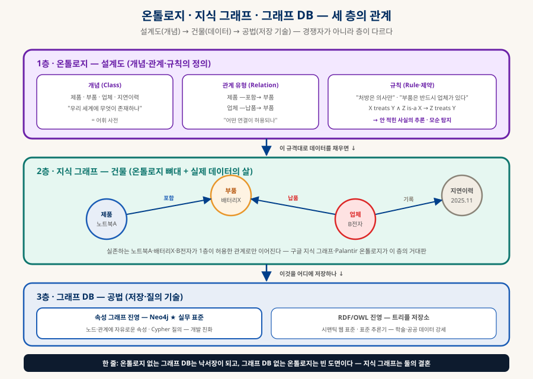
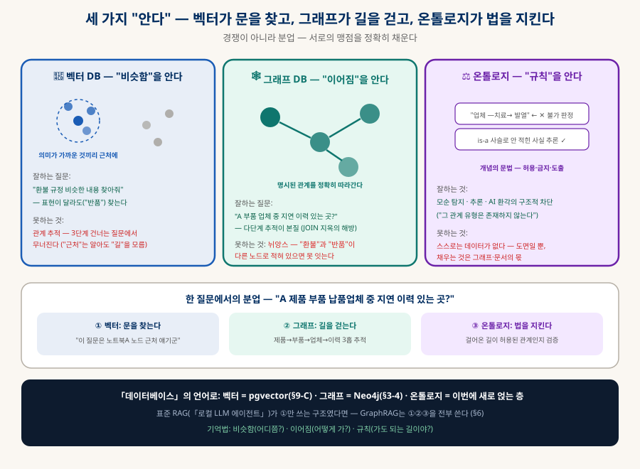
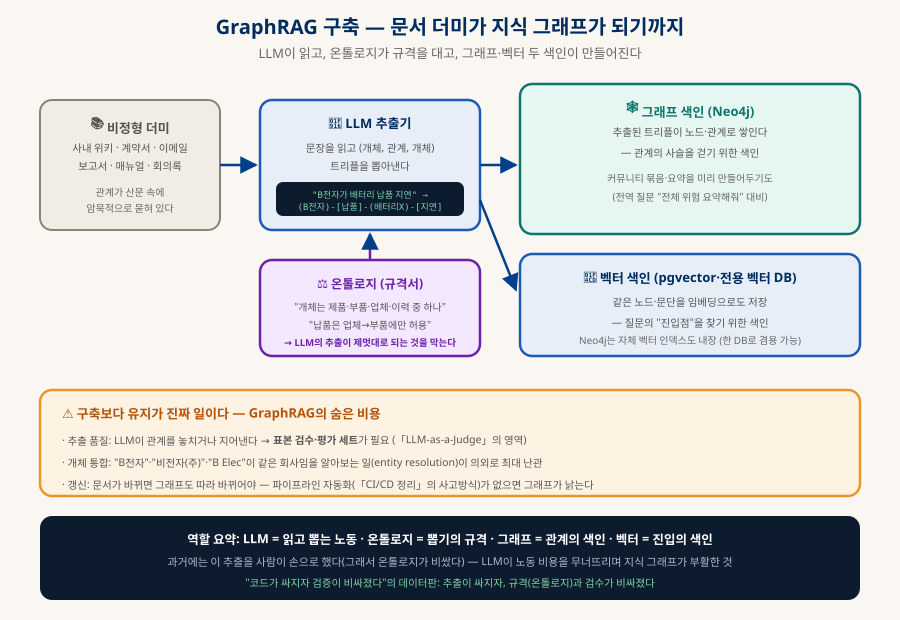
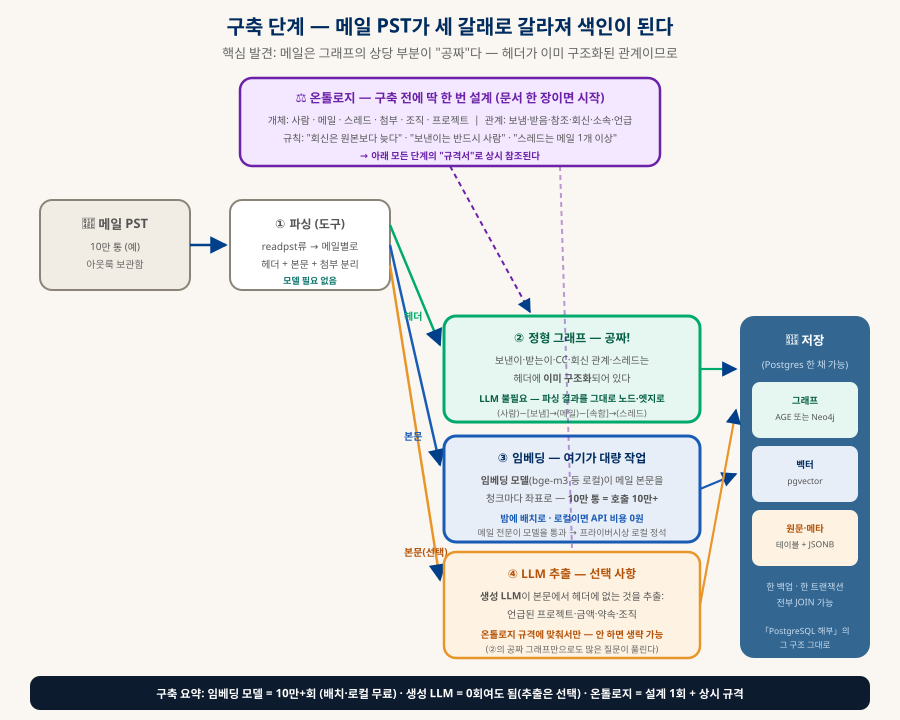
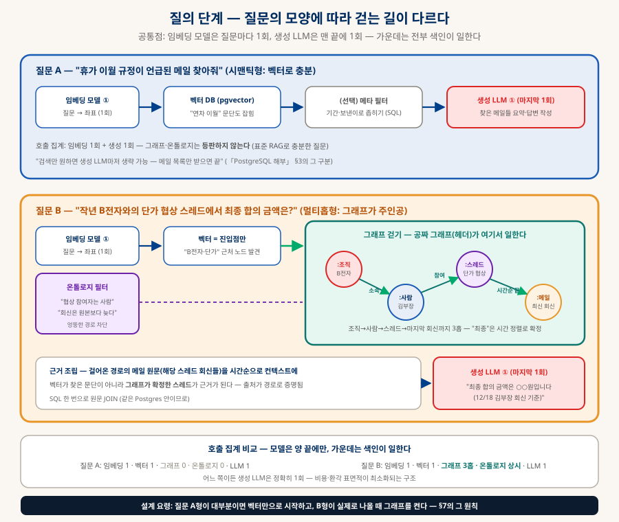

온톨로지와 지식 그래프
벡터가 문을 찾고, 그래프가 길을 걷고, 온톨로지가 법을 지킨다
벡터 검색은 "비슷함"을 알지만 "관계"를 모른다 — 그 맹점이 드러나면서 철학에서 온 오래된 개념이 AI 스택의 중심으로 돌아왔다. 온톨로지가 무엇인지에서 시작해, Neo4j가 관계를 걷는 법, 벡터 DB와의 분업, 그리고 셋이 합체하는 GraphRAG까지 — 관계의 세계를 해부한다.
0. 한눈에 보기 — 세 가지 "안다"
이 문서 전체가 이 표의 전개다
| 📍 벡터 DB | 🕸 그래프 DB | ⚖️ 온톨로지 | |
|---|---|---|---|
| 아는 것 | 비슷함 — 의미적 근처 | 이어짐 — 명시적 관계 | 규칙 — 개념의 문법 |
| 비유 | "어디쯤이야?" | "어떻게 가?" | "가도 되는 길이야?" |
| 「데이터베이스」에서 | pgvector (§9-C) | Neo4j (§3-4) | 이번에 새로 얹는 층 |
1. 온톨로지란 — 우리 세계의 어휘 사전 + 관계 규칙
사람 머릿속 상식을 기계가 추론할 수 있는 형태로 적는 일
원래 철학 용어다(존재론 — "무엇이 존재하는가"). 정보과학이 빌려와 이런 뜻이 됐다: 어떤 도메인에 존재하는 개념들, 그 관계들, 지켜야 할 규칙을 명시적·형식적으로 정의한 것. "명시적·형식적"이 핵심이다 — 사람 머릿속에만 있는 상식을 기계가 읽고 추론할 수 있는 형태로 적는다는 뜻. 의료 온톨로지 한 조각으로 감을 잡으면:
// 개념과 관계 아스피린 —is a→ 해열제 (분류) 해열제 —treats→ 발열 (관계) 아스피린 —interacts with→ 와파린 (관계) // 규칙 X가 Y를 treats하고, Z가 X의 하위 분류면 → Z도 Y를 treats // → 기계의 추론: "아스피린은 발열을 치료한다" // 어디에도 직접 적혀 있지 않지만, 규칙에서 도출된다 // → 모순 탐지: 누가 "업체가 발열을 치료한다"고 입력하면 // "그런 관계 유형은 존재하지 않는다"며 거부할 수 있다
이 추론과 거부가 온톨로지를 단순 분류체계·DB 스키마와 가르는 지점이다:
| 분류체계 (Taxonomy) | DB 스키마 | 온톨로지 | |
|---|---|---|---|
| 담는 것 | 계층(is-a)뿐 | 테이블·컬럼·타입 | 개념 + 임의의 관계 + 규칙·제약 |
| 예 | 생물 분류 (계문강목과속종) | users(id, name, …) | "처방은 의사만 할 수 있다"까지 |
| 할 수 있는 것 | 찾아 내려가기 | 저장·조회 | 추론 — 안 적힌 사실 도출 · 모순 탐지 |
2. 지식 그래프 — 설계도와 건물의 결혼
온톨로지·지식 그래프·그래프 DB는 경쟁자가 아니라 층이 다르다

| 층 | 정체 | 비유 |
|---|---|---|
| 온톨로지 | 개념·관계 유형·규칙의 정의 | 건축 법규 + 설계 도면 |
| 지식 그래프 | 온톨로지 뼈대 + 실제 데이터(노드·엣지) | 그 규격대로 지은 건물 |
| 그래프 DB | 그것을 담는 저장·질의 기술 | 공법 (Neo4j = 실무 표준 공법) |
3. Neo4j 실전 — 관계를 "걷는" 법
「데이터베이스」 §3-4의 Neo4j를 이번엔 질의 언어까지
Neo4j의 데이터 모델(속성 그래프)은 부품이 넷뿐이다 — 노드(동그라미), 레이블(노드의 종류: :제품), 관계(방향 있는 화살표: [:포함]), 속성(노드·관계에 붙는 키-값). 그리고 질의 언어 Cypher는 그래프 모양을 아스키 아트로 그리는 독특한 문법이라 직관적이다:
MATCH (p:제품 {이름: '노트북A'})-[:포함]->(부품) <-[:납품]-(업체)-[:기록]->(d:지연이력) RETURN 업체.이름, d.날짜 // 읽는 법: ( ) = 노드, -[ ]-> = 관계 화살표 // "노트북A가 포함한 부품을, 납품하는 업체 중, 지연이력이 기록된" — // 질문의 한국어 어순이 거의 그대로 패턴이 된다
같은 질문을 관계형 DB로 하면 JOIN 3~4번이 필요하고, 단계가 늘수록 성능이 급격히 나빠진다 — 「데이터베이스」 §3-4에서 그래프 DB의 존재 이유로 그린 그 대비(db-graph-vs-join 도식)가 여기서 실전이 된다. 그래프는 관계가 포인터로 저장돼 있어 "걷는" 비용이 단계당 일정하다.
3-1. 다단계 탐색을 눈으로 — 벡터가 못 걷는 길 (동적)
4. 벡터 DB — "비슷함"의 지도, 그리고 RAG의 한계
표현이 달라도 찾는다 — 대신 길을 모른다
벡터 DB는 텍스트(문단·노드 설명)를 임베딩(수백~수천 차원의 좌표)으로 바꿔 저장하고, 질문도 좌표로 바꿔 가장 가까운 것들을 찾는다. 힘은 표현의 자유에서 나온다 — "환불"로 물어도 "반품 절차" 문단을 찾아낸다(단어가 아니라 의미의 좌표가 가까우므로). 「로컬 LLM 에이전트」의 RAG 파이프라인이 이 원리 위에 서 있다.
| 질문 유형 | 벡터 검색 | 왜 |
|---|---|---|
| "환불 규정 알려줘" | ✅ 강함 | 비슷한 문단이 실제로 존재한다 — 찾아서 주면 끝 |
| "반품이랑 환불이 어떻게 달라?" | ✅ 강함 | 두 주제의 문단을 각각 찾아오면 LLM이 비교한다 |
| "A 부품 업체 중 지연 이력 있는 곳?" | ❌ 무너짐 | 답과 비슷한 문장이 존재하지 않는다 — 답은 흩어진 사실들의 연결(경로)에 있다 |
| "우리 문서 전체의 위험 요인을 요약해줘" | ❌ 무너짐 | "전체"는 어느 문단과도 비슷하지 않다 — 전역 구조가 필요 (그래프의 커뮤니티 요약이 답) |
5. 세 가지 "안다" — 분업의 삼각형
비슷함 · 이어짐 · 규칙 — 서로의 맹점을 채운다

6. GraphRAG — 셋의 합체
구축은 LLM이 노동하고, 질문은 셋이 릴레이한다
먼저 구축 — 문서 더미가 지식 그래프가 되는 과정. 과거에는 이 추출을 사람이 손으로 해서 온톨로지가 비쌌는데, LLM이 그 노동을 대신하게 되면서 지식 그래프가 부활했다:

6-1. 질문 파이프라인 — 다섯 단계의 릴레이 (동적)
6-2. 실전 워크스루 — 메일 PST를 질의응답 시스템으로
추상 파이프라인을 실제 시나리오로 내려보자: 아웃룩 메일 보관함(PST) 10만 통을 질의응답 시스템으로 만든다면, 각 부품이 언제 일하는가. 메일이라는 도메인의 반가운 특성 하나가 구축의 그림을 바꾼다 — 헤더(보낸이·받는이·회신·스레드)가 이미 구조화된 관계라서, 그래프의 상당 부분이 LLM 없이 "공짜"로 나온다:


"누가 언제 일하나"를 한 표로 — 이 시나리오의 시간표이자 비용표다:
| 부품 | 구축 때 (한 번) | 질의 때 (질문마다) | 비용 감각 |
|---|---|---|---|
| 온톨로지 | 설계 1회 — 개체 6종·관계 6종·규칙 3개짜리 문서 한 장이면 시작 | 상시 참조 — 경로 검증·엉뚱한 관계 차단 | 사람의 생각 비용 (문서 한 장) |
| 파서 (도구) | PST → 헤더·본문·첨부 분리 | — | 모델 불필요 — readpst류 도구 |
| 임베딩 모델 | 10만+회 — 본문 청크마다. 밤에 배치, 로컬(bge-m3 등)이면 무료 | 1회 — 질문을 좌표로 | 대량이지만 로컬 무료 (「로컬 모델」 §5-1). 메일 전문이 통과하므로 로컬이 정석 |
| 벡터 DB (pgvector) | 임베딩 저장·색인 | 근처 찾기 — A형의 본체, B형의 진입점 | Postgres 확장 — 추가 시스템 0 |
| 그래프 | 헤더에서 공짜 구축 (+ LLM 추출분은 선택) | B형에서 멀티홉 걷기 — "최종"은 시간 정렬로 확정 | AGE면 같은 PG 안, 본격화되면 Neo4j |
| 생성 LLM | 0회여도 됨 — 본문 추출(프로젝트·금액)을 원할 때만 | 정확히 1회 — 근거를 받아 답변 문장 작성 | 가장 비싼 부품을 가장 적게 — 환각 표면적도 최소 |
7. 실전 설계 가이드 — 언제 무엇을
전부 갖추는 게 답이 아니다 — 질문의 모양이 스택을 정한다
| 내 질문들의 모양 | 권장 스택 | 이유 |
|---|---|---|
| "~에 대한 내용 찾아줘"가 대부분 | 벡터 RAG만 (pgvector) | 멀티홉이 없으면 그래프는 과투자 — 표준 RAG로 충분하다 |
| 개체와 관계가 뚜렷한 도메인 (부품·계약·인물·조직) | 벡터 + 그래프(Neo4j) | 멀티홉 질문이 실제로 나오는 곳 — 가벼운 온톨로지(레이블·관계 유형 목록)부터 시작 |
| 규칙·규제가 무거운 도메인 (의료·금융·법무) | 셋 전부 + 정식 온톨로지 | 모순 탐지·감사 근거가 요구된다 — 표준 온톨로지(SNOMED류)가 이미 있는 경우도 많다 |
| "전체를 요약·분석해줘"형 질문 | 그래프 + 커뮤니티 요약 | 전역 질문은 벡터의 사각 — 그래프를 군집으로 묶어 미리 요약해 둔다 |
8. 이 지식 베이스로 번역하면
사실, 이 사이트가 원시적 지식 그래프다
| 이 지식 베이스의 요소 | 지식 그래프 용어로 |
|---|---|
| 문서 하나하나 | 노드 (레이블: 그룹 — Software·Data, AI·LLM …) |
| 「함께 읽기」·§상호참조 | 엣지 — 단, 지금은 관계 "유형"이 산문에 암묵적으로 있다 |
| docs.json의 group·tags | 가벼운 분류체계 (taxonomy) |
| 여기에 온톨로지를 얹는다면 | 관계 유형을 명시하는 것 — A —각론이다→ B · A —전제다→ B · A —대비된다→ B |
9. 함께 읽기
이 문서에서 갈라지는 길들
| 주제 | 문서 |
|---|---|
| 그래프 DB·JOIN 대비·pgvector의 원래 자리 | 「데이터베이스 완전 정리」 §3-4·§9 — 이 문서의 모(母) 문서 |
| 표준 RAG 파이프라인 (벡터만 쓰던 시절) | 「로컬 LLM 에이전트」 — RAG·임베딩 |
| 추출 품질 검수 — 평가 설계 | 「LLM-as-a-Judge」 |
| 에이전트 흐름의 그래프 (동명이인) | 「클로드 확장하기」 §10 — 그래프 엔지니어링 |
| Palantir·온톨로지 엔지니어라는 직군 | 「AI 시대의 직무 지형」 |
| 이름의 다의성이라는 반복 주제 | 「개발 생태계 해부」 |